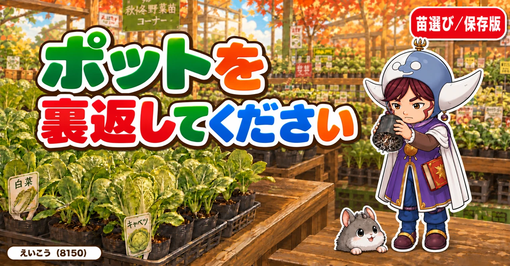
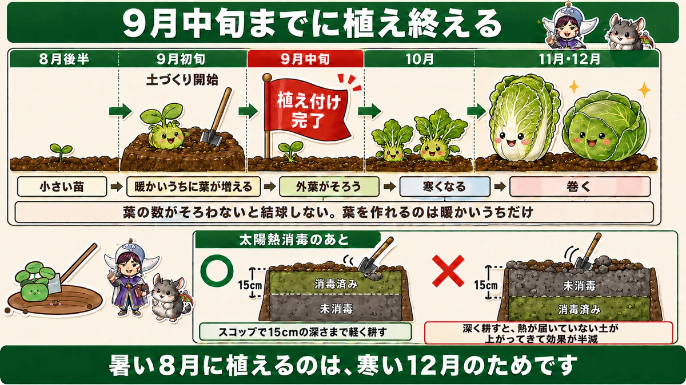
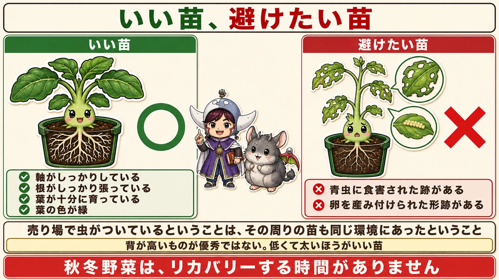
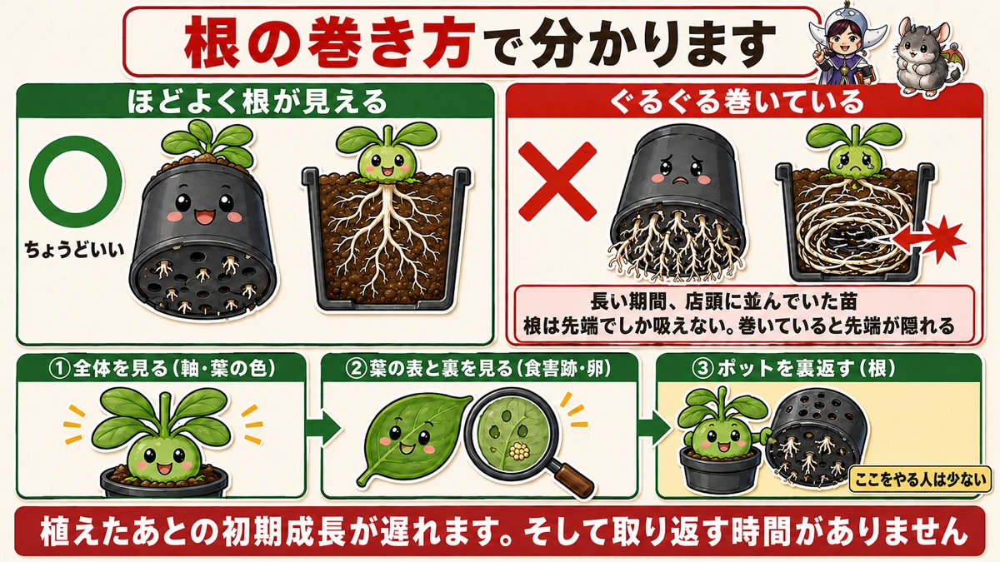
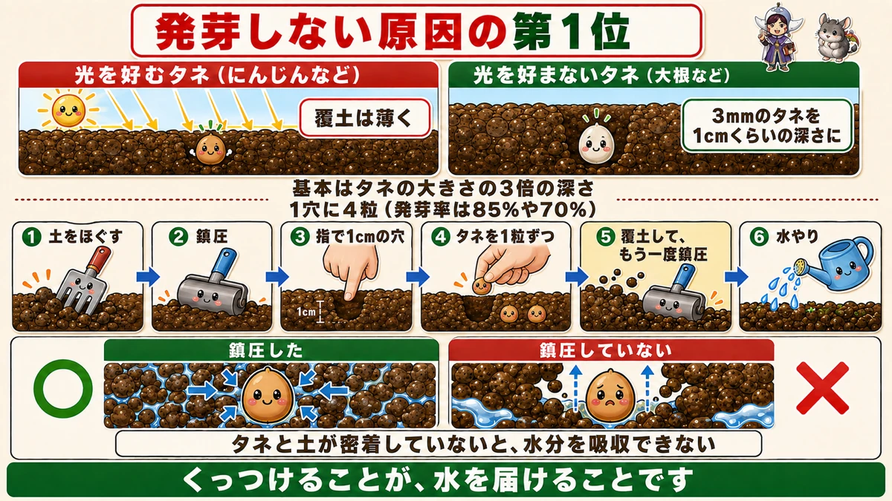

苗選びとタネまきの基本｜いい苗の見分け方・ポットの裏・接ぎ木苗・まく深さと鎮圧

どうも、8150（えいこう）です🌱 家庭菜園歴8年、理科の教員免許を持っていて、有機・無農薬で野菜を育てています。
📖 この記事の目次
この記事で分かること
- 苗を買うなら、背の高さより「茎のがっしり感」と「葉のようす」を見ます。ひょろっと伸びた苗（徒長苗）は避けます。
- 虫食いや病気のあと、なんとなくの違和感がある苗は、無理に買わないほうが安心です。
- ポットの底の穴から根が出ている苗は、根が古くなっている（老化している）ことがあります。
- 初めて夏野菜を育てるなら、病気に強い台木につないだ「接ぎ木苗」が心強い味方です。ただし、自根の苗でも十分という声もあります。
- タネをまく深さは、種の性質で変わります。光を好む種は浅く、光を嫌う種はしっかり土をかけます。
- まいたあと、上から押さえて種と土をくっつける「鎮圧」を忘れると、芽が出にくくなります。
野菜づくりの最初の一歩は、苗を買うか、タネをまくか、です。
ホームセンターの売り場には、同じ野菜の苗がずらっと並んでいて、「どれを選べばいいの？」と迷ってしまいますよね。タネをまいてみたら、なかなか芽が出なかった、という経験がある方も多いと思います。
安心してください。苗選びにもタネまきにも、ちゃんと見るべきポイントがあります。この記事では、売り場での苗の見分け方から、タネをまく深さ、芽を出させるコツまで、順番に書いていきます。

早見：苗選びとタネまきの基本（ひと目で分かる目安）
いい苗
- 背が低くても、茎が太くてがっしりしている
- 葉の色がよく、形や大きさがそろっている
- 節と節のあいだ（節間）がつまっている
- 虫食いや病気のあとがない
- ポットの土が、からからに乾いていない
避けたい苗
- ひょろっと背だけ高い（徒長苗）
- 葉が黄色い、茶色く傷んでいる、形がばらばら
- 葉の裏に虫や卵、葉に白い粉や斑点がある
- ポットの底から根がたくさん出ている（老化していることがある）
- なんとなく違和感がある
野菜ごとの苗の目安
- 玉ねぎ：長さ20〜30cm、太さ5〜8mmくらい。細すぎても太すぎてもよくない
- スナップえんどう：10cmくらいまで。20cmを超えるようなひょろ長い苗は避ける
- さつまいも：長さ30〜35cmくらい、葉が7〜8枚以上
- 夏野菜（トマト・ナス・きゅうりなど）：背が低くてがっしり、葉の色がよいもの
タネまきの目安
- まく深さ：種の大きさの3倍くらいが一般的な目安
- 光を好む種（にんじん、レタス、春菊など）：ごく浅く、種が見えるくらい
- 光を嫌う種（大根など）：1cmくらい、しっかり土をかける
- まいたら：上から押さえて、種と土をくっつける（鎮圧）
- 夏野菜の発芽にちょうどいい温度：25〜30度くらい
苗が売り場に並ぶ季節
- 3〜5月：トマト、ナス、ピーマン、きゅうり、ズッキーニ、かぼちゃ、スイカなどの夏野菜の苗
- 5〜6月：さつまいもの苗（つる）
- 8月末〜9月：白菜、キャベツ、ブロッコリー、カリフラワー、レタスなど秋冬野菜の苗
- 10月ごろ：いちごの苗、スナップえんどう・そら豆の苗
- 11月ごろ：玉ねぎの苗
秋冬野菜は、植えつけの時期がとても大事です。寒くなるまでに育てられる期間が短いので、白菜やキャベツは9月の中ごろまでに植えたいところです。苗が並び始めたら、早めに手に入れておきましょう。
種袋の読み方
種をまくなら、まず種袋の裏をよく読みます。育て方の大事な情報が、ぎっしり書かれています。
- まきどき：地域ごと（寒い地域・一般的な地域・暖かい地域）に、種をまく時期と収穫の時期が表になっている
- 発芽適温：芽が出やすい温度
- 発芽率：まいた種のうち、どれくらいの割合で芽が出るかの目安
- 有効期限：この日までにまけば、表示の発芽率が期待できる、という期限
- 株間・条間：株と株、列と列のあいだの目安
- 好光性・嫌光性：光を好む種か、嫌う種か（書かれていないこともある）
自分の地域の欄を確かめて、まく時期を決めてください。
作業の手順
ここからは、苗を買うときと、タネをまくときの流れを、順番に書いていきます。
手順1：苗を買う時期を決める
苗は、植えつけの時期に合わせて売り場に並びます。夏野菜なら4月から5月、秋冬野菜なら8月の終わりから9月、玉ねぎなら11月ごろです。
人気の品種や、玉ねぎの苗などは、すぐに売り切れてしまうことがあります。でも、だからといって、小さすぎる苗や、古くなった苗を無理に買う必要はありません。いい苗が見つからなければ、別のお店を探すか、少し待ってみてください。
また、苗を買ったら、なるべく早く植えるのが基本です。ポットに入れたまま置いておくと、根がつまって、苗がどんどん老化していきます。植える日の予定を立ててから買いに行きましょう。
手順2：苗全体を見る
売り場では、まず苗全体を見ます。
- 背の高さより、茎の太さと、株元の締まり具合を見る
- 葉の色が濃く、しっかりしているか
- 葉の形や大きさがそろっているか
背の高い苗のほうが立派に見えて、つい選んでしまいがちです。売り場では、どうしても大きく育った苗のほうに目が行ってしまいますよね。でも、背が低くても、葉がしっかりしていて、茎ががっしりしている苗のほうが、植えたあとに強く育ちます。

手順3：徒長苗を見分ける
「徒長（とちょう）」とは、苗がひょろひょろと細長く伸びてしまった状態のことです。
- 茎が細く、ひょろっと長い
- 葉と葉のあいだ（節間）が長く、すかすかしている
- 葉の色が薄い
徒長した苗は、植えたあと、風で倒れたり折れたりしやすく、育ちも弱くなりがちです。同じ値段なら、背が低くてもがっしりした苗を選んでください。
ただし、少し徒長しているくらいなら、植えたあとに追いついて、ちゃんと育つこともあります。「徒長苗は絶対にだめ」というより、「選べるなら、がっしりした苗を」と考えてください。
手順4：虫と病気を見る
葉を1枚めくって、裏も見てください。
- 葉の裏に、小さな虫や卵がついていないか
- 葉に虫食いの穴がないか
- 葉に白い粉のようなもの、黒や茶色の斑点がないか
- 葉が縮れたり、変な形になったりしていないか
特に、薬を使わずに育てたい方は、ここを厳しめに見ておくと安心です。植えてから虫を取るより、売り場で避けるほうがずっと楽です。売り場で虫や卵がついていた苗を畑に植えると、そこから畑全体に広がることがあります。
そして、「なんとなく、この苗は変だな」と感じたら、無理に買わないほうがいい、という考え方もあります。迷ったら、ほかの苗を選びましょう。
手順5：ポットを確かめる
苗選びで、意外と見落としがちなのが、ポットです。
- ポットの土が、からからに乾いていないか（水切れで弱っていることがある）
- ポットの底の穴から、根がたくさん出ていないか
ポットの底から根がたくさん出ている苗は、ポットの中で根がいっぱいになって、ぐるぐる巻いている状態のことがあります。こういう苗は、根が古くなって（老化して）いることがあり、植えたあとの根の伸びが遅れることがあります。
ただし、根が少し見えているくらいなら、根がしっかり張っている証拠でもあります。同じ野菜、同じ値段の苗が並んでいたら、ポットの底も見比べて、根の状態がちょうどいいものを選んでください。

手順6：接ぎ木苗か、自根苗かを選ぶ
夏野菜の苗には、「接ぎ木苗（つぎきなえ）」と「自根苗（じこんなえ）」があります。
- 接ぎ木苗：病気や土の中の虫（センチュウ）に強い品種の根（台木）に、実がよくなる品種（穂木）をつないで作った苗。値段は少し高め
- 自根苗：種からそのまま育てた苗。値段は安め
接ぎ木苗は、根が病気に強いので、同じ場所で続けて育てたときの障害（連作障害）や、病気に強いと言われます。初めて夏野菜を育てるなら、接ぎ木苗を選ぶと安心です。
一方で、トマトなら自根苗でも十分育つ、という声もあります。どちらを選ぶかは、畑の状態や、予算に合わせて決めてください（あとで両方の考え方を書きます）。
接ぎ木苗を植えるときは、次のことに気をつけます。
- つぎ目についている透明なクリップやキャップは、無理に外さない（自然に外れるまで待つ）
- つぎ目が土に埋まらないように、浅めに植える
- 台木（つぎ目より下）から出てくる芽は、かきとる
手順7：野菜ごとの苗選び
- 玉ねぎ：長さ20〜30cm、太さ5〜8mmくらい（鉛筆くらい）がちょうどいいと言われます。細すぎると根づきにくく、太すぎると春に花が咲いてしまう（とう立ち）しやすくなります
- スナップえんどう：冬を越す苗は、大きすぎないほうがいいです。10cmくらいまでのものを。20cmを超えるような、ひょろっと伸びた苗は避けます
- さつまいも：苗（つる）の長さが30〜35cmくらい、葉が7〜8枚以上あるものを。大きすぎる苗は植えにくくなります
- いちご：株のまん中（クラウンと呼ばれる部分）が太く、しっかりしているものを
- ブロッコリー・キャベツ：葉の形や大きさがそろい、虫食いのないものを
苗を買ってから植えるまで
苗を買ったら、なるべく早く植えるのが基本ですが、すぐに植えられないときは、次のように管理します。
- 日当たりと風通しのよい場所に置く（車の中や、暗い室内に置きっぱなしにしない）
- ポットの土が乾いたら、たっぷり水をやる
- 植える前日か当日の朝に、ポットにたっぷり水を吸わせておく
ホームセンターの売り場は、建物の中や日陰に置かれていることもあります。そういう苗を、いきなり真夏の直射日光に当てると、葉が焼けてしまうことがあります。植える前の数日、少しずつ外の日差しに慣らしてあげると安心です。
苗の植え方
- 植え穴を掘り、穴に水をたっぷり入れて、しみこむのを待つ
- ポットから苗をそっと抜く。根鉢（根と土のかたまり）は、なるべくくずさない
- 根鉢の上の面が、まわりの土と同じ高さになるように植える
- まわりの土を寄せて、株元を軽く押さえる
- 植えたあと、もう一度水をやる
根鉢をくずすと、細い根が切れて、根づくまでに時間がかかります。ポットの中で根が巻いていた場合は、底のほうの根を軽くほぐしてから植えると、外へ伸び出しやすくなる、という方法もあります。
植えつけは、風の強い日や、真夏の昼の暑い時間を避け、曇りの日か夕方に行うのがおすすめです。
手順8：タネをまく準備
ここからは、タネをまくときの流れです。
- まく前に、畑や土をしっかり湿らせておく
- 種袋の裏を読んで、まく時期、まく深さ、発芽にちょうどいい温度を確かめる
- 種が光を好むか、嫌うかを確かめる（種袋に書かれていることが多い）
手順9：まく深さを決める
まく深さは、種の大きさの3倍くらいが一般的な目安です。ただし、種の性質によって変わります。
- 光を好む種（好光性種子）：にんじん、レタス、春菊、しそなど。光が当たらないと芽が出にくいので、土はごく薄く、種がうっすら見えるくらいにかける
- 光を嫌う種（嫌光性種子）：大根、ねぎ、玉ねぎなど。光が当たると芽が出にくいので、しっかり土をかける
- どちらでもない種：種の大きさの3倍くらいを目安に
具体的な例です。
- 大根：指の第一関節くらいまで、約1cmの穴をあけてまく
- 枝豆：土が5mmくらいかかればいい
- 春菊：土に埋めずに、種が見えるくらいの深さ
- レタス：ごく薄く土をかける
深くまきすぎると、芽が地上に出る前に力尽きてしまいます。これは、芽が出ない原因としてとても多いものです。
手順10：まく粒の数
1か所に何粒まくかも、野菜によって違います。
- 大根：1か所に4〜5粒。芽が出たら、育つにつれて間引いて1本にする
- 枝豆：1か所に3〜4粒
- 玉ねぎを直まきする場合：1か所に5〜6粒
多めにまいておくと、芽が出ないものがあっても安心です。芽がそろったら、元気なものを残して間引きます。

F1の種と、固定種の種
種袋には、「○○交配」と書かれたものと、「固定種」「在来種」と書かれたものがあります。
- F1（一代交配種）：性質の違う2つの親をかけ合わせた種。育ちがそろい、病気に強いなど、育てやすいものが多い。ただし、そこから種を採っても、親と同じ野菜にはなりにくい
- 固定種・在来種：何代も種を採り続けて、性質がそろってきた種。育ちには少しばらつきが出ることもあるが、種を採って次の年にまくことができる
初めてなら、育てやすいF1の種から始めるのがおすすめです。慣れてきたら、固定種で自分の畑の種をつないでいくのも楽しいですよ。
手順11：鎮圧をする
種をまいて土をかけたら、上から押さえて、種と土をしっかりくっつけます。これを「鎮圧（ちんあつ）」と言います。
鎮圧には、2つの大事な役割があります。
- 種と土がくっついて、土の中の水分を種が吸いやすくなる
- 水やりで種が流れにくくなる
鎮圧が足りないと、種のまわりにすき間ができて、水を吸えず、芽が出にくくなります。芽が出ない原因として、とても多いのがこの鎮圧不足です。
まく前に土を押さえておき、穴をあけてまき、土をかけたあとにもう一度押さえる。このように、2回鎮圧するやり方もあります。
間引きのこつ
芽がそろったら、混みあっているところから間引いていきます。
- 一度に全部減らさず、育つにつれて何回かに分けて間引く
- 元気がない芽、形の悪い芽、虫に食べられた芽から抜く
- 抜くときに、残す芽の根を傷めそうなら、はさみで根元を切る
- 間引いたあとは、残した株の株元に軽く土を寄せる
間引いた若い芽は、捨てずに食べられるものが多いです。大根の間引き菜、小松菜やかぶの間引き菜は、みそ汁やおひたしにぴったりです。
手順12：水やりは、かけすぎない
鎮圧したら、軽く水をやります。
ここで気をつけたいのが、水のかけすぎです。勢いよくたくさんかけると、せっかくまいた種が流れてしまいます。特に、枝豆の種は腐りやすいので、土が軽く湿るくらいで十分です。
まく前に畑をしっかり湿らせておけば、まいたあとの水やりは少なくてすみます。
手順13：発芽の温度を保つ
種が芽を出すには、ちょうどいい温度が必要です。
- 夏野菜（トマト、ナス、ピーマンなど）：発芽には25〜30度くらい。育つのには17〜25度くらい
- レタス：比較的低い温度でも芽が出るが、暑すぎると出にくい
- 冬にまく葉物：寒い時期は、ビニールや不織布で保温する
寒い時期に種をまくなら、ビニールのトンネルや、衣装ケースなどで保温して、温度を上げてあげます。ただし、芽が出たら、閉め切ったままにせず、日中は開けて風を通してください。閉め切ったままだと、苗が蒸れたり、ひょろひょろに伸びたりします。
手順14：苗を育てる（育苗）
自分で苗を作るときに気をつけたいのは、苗を徒長させないことです。
徒長の原因は、主に次の3つと言われます。
- 水のやりすぎ
- 温度が高すぎる
- 光が足りない
このほか、種をまいた間隔が狭すぎて苗が混みあっている、肥料が多すぎる、といったことも徒長の原因になります。
- 水は、土の表面が乾いてからやる
- 芽が出たら、日によく当てる
- 混みあってきたら、間引くか、ひとまわり大きなポットに植えかえる（鉢上げ）
夏に苗を作るときは、強い日差しをやわらげるために遮光ネットを使うことがあります。そのときは、光をさえぎりすぎないように、遮光率30〜40%くらいのものがいいと言われます。70%のように強くさえぎりすぎると、芽の出に影響することがあります。
苗を作る期間の目安
自分で苗を作る場合、種をまいてから植えられる大きさになるまでには、野菜によってかなり違う時間がかかります。
- きゅうり：約40日
- スイカ：約50日
- トマト：約60日
- ナス・ピーマン：約80〜90日
ナスやピーマンは、苗を作るのにいちばん時間がかかる野菜です。植えつけの時期から逆算して、早めに種をまく必要があります。
自分で苗を作るのは大変だと感じたら、お店で苗を買うのも立派な選択です。苗を買えば、種から始めるより、畑で育てる期間を短くできます。
育苗か、直まきか
直まきが向いている野菜
大根、にんじん、ごぼうのように、根がまっすぐ下に伸びる野菜（直根の野菜）は、畑に直接種をまく「直まき」が向いています。
苗を作って植えかえると、まっすぐ伸びるはずの主な根が傷ついて、根が曲がったり、分かれたりしてしまうことがあるからです。
苗を作るのが向いている野菜
トマト、ナス、ピーマン、きゅうり、キャベツ、ブロッコリーなどは、苗を作ってから植えるのが一般的です。
苗を作るよさは、こんなところにあります。
- 小さいうちは、水やりや虫対策を、苗の置き場所だけでまとめてできる
- 芽が出るまでの温度を管理しやすい
- 畑が空くのを待たずに、先に育て始められる
玉ねぎの苗の作り方は3通り
玉ねぎの苗を自分で作る場合、大きく3つの方法があります。
- 畑に苗床を作って、すじまきする：水やりなどの管理は楽だが、虫や台風の影響を受けやすい
- プラグトレー（小さな穴がたくさんあるトレー）にまく：1粒ずつまけて、苗の大きさがそろいやすい
- 育苗箱にまく：まく量が少ない家庭菜園に向いている
家庭菜園なら、育苗箱やプラグトレーが手軽です。種を買って自分で作ると、苗を買うより安くすむこともあります。
失敗の見分け方
種をまいたのに、芽が出ない
順番に見直してください。
- 深くまきすぎていないか（特に光を好む種）
- 鎮圧が足りていたか
- 土が乾いていなかったか
- 水をかけすぎて、種が流れたり腐ったりしていないか
- 温度が低すぎたり高すぎたりしていないか
- 種が古くなっていないか
いちばん多いのは、深さと鎮圧の問題です。
芽は出たけど、ひょろひょろに伸びた
光が足りないか、温度が高すぎるか、水が多すぎる可能性があります。日当たりのよい場所に移し、水やりを控えめにしてください。混みあっているなら、間引きます。
買った苗が、植えたあとなかなか育たない
- ポットの中で根が巻いて、老化していた
- 植える前に、ポットの中で水切れしていた
- 植えつけたときの気温が低すぎた
- 植える深さが合っていなかった（接ぎ木苗のつぎ目を埋めた、など）
玉ねぎが春に花を咲かせた
太すぎる苗を植えると、春にとう立ちしやすくなると言われます。次は、太さ5〜8mmくらいの苗を選んでみてください。
説明が分かれていること
接ぎ木苗か、自根苗か
- 初めて夏野菜を育てるなら、病気に強い接ぎ木苗がおすすめ、という説明
- トマトなら、自根苗でも十分育つ、という経験
- 自根苗のほうが好き、という人もいる
畑で同じ野菜を続けて育てている、病気が出たことがある、という場合は接ぎ木苗が安心です。そうでなければ、自根苗でも育てられることが多いです。
鎮圧の強さ
- 畑にまくときは、思いっきり押さえていい、という説明
- セルトレイにまくときは、軽く押さえるだけ、という説明
畑のやわらかい土と、セルトレイの育苗用の土では、ちょうどいい強さが違います。畑ならしっかり、セルトレイなら軽く、と覚えておくといいと思います。
また、苗を植えたときに根鉢を強く押しつけるのは避けたほうがいい、という説明もあります。種の鎮圧と、苗を植えるときの押さえ方は、別のものと考えてください。
枝豆やとうもろこしは、直まきか、苗を作るか
- 根を傷めないように、直まきがいい、という説明
- 直まきで芽が出ないことがあるので、苗を作ってから植えるのがいい、という説明
直まきは根を傷めにくい、苗づくりは芽の出の失敗を減らせる。それぞれ、何を防ぎたいかで選んでください。鳥に種を食べられやすい畑なら、苗を作るほうが安心です。
徒長した苗は、深く植えるか、浅く植えるか
- ポットに植えかえる（鉢上げ）ときに、徒長した苗を少し深めに植えて調整する、という説明
- 畑に植えるときは、茎を土に触れさせず、浅めに植える、という説明
苗を植えかえる場面や、野菜の種類によって変わります。接ぎ木苗は、つぎ目を埋めないように浅めに植えるのが基本です。
育苗用の土
- 種まき用の土を使う、という説明
- 肥料の入った培養土を組み合わせて使う、という方法もある
種まき用の土は、肥料が少なく、水はけと水もちのバランスがいいように作られています。迷ったら、種まき用の土を使うのが安心です。
よくある質問
Q. 苗と種、どちらから始めるのがいいですか？
A. 初めてなら、苗から始めるのがおすすめです。特にトマトやナス、ピーマンなどの夏野菜は、種から苗を作るのに2〜3か月かかり、温度の管理もむずかしいので、最初はお店の苗を使うのが安心です。苗を買えば、芽を出させる手間がかからず、畑で育てる期間も短くてすみます。大根やにんじん、葉物のように、種から育てるのが一般的な野菜は、種から始めてください。
Q. 売り場の苗に、ちょっと虫食いがありました
A. 少しの穴なら、大きな問題にならないこともあります。ただ、葉の裏に虫や卵が残っていることもあるので、選べるなら虫食いのない苗を選ぶほうが安心です。買った場合は、植える前に葉の裏をよく確かめてください。
Q. 種袋の「発芽率」とは何ですか？
A. まいた種のうち、どれくらいの割合で芽が出るかの目安です。たとえば発芽率80%なら、10粒まいて8粒くらい芽が出る、という意味です。発芽率が低い種は、そのぶん多めにまいておきます。古い種ほど、発芽率は下がっていきます。
Q. 余った種は、来年も使えますか？
A. 野菜によって種の寿命は違いますが、涼しくて乾いた場所に保存すれば、翌年も使えることが多いです。ねぎやにんじんのように寿命の短い種もあるので、まく前に、湿らせた紙の上で芽が出るか試してみると安心です。
Q. 苗を買ってから、植えるまで何日置いても大丈夫ですか？
A. なるべく早く植えるのが基本です。数日なら、日当たりのよい場所に置いて、水を切らさないようにしておけば大丈夫です。長く置くと、ポットの中で根がつまって、苗が老化してしまいます。
Q. 同じ野菜なのに、苗の値段が違うのはなぜですか？
A. 接ぎ木苗は、手間をかけてつないで作っているので、自根苗より値段が高めです。また、ポットの大きさや、品種の珍しさによっても値段が変わります。値段の高い苗がいつもいいわけではないので、この記事のポイントで苗そのものを見て選んでください。
Q. 苗を植えたら、すぐに肥料をやったほうがいいですか？
A. 植えつけの前に土づくりで肥料を入れているなら、植えてすぐに追加の肥料はいりません。植えたばかりの苗は、根がまだ新しい土になじんでいないので、肥料をやりすぎると根を傷めることがあります。根づいて新しい葉が伸び始めてから、野菜のようすを見て追肥を考えてください。
Q. 苗は、どこで買うのがいいですか？
A. ホームセンター、園芸店、農産物の直売所などで買えます。園芸店や直売所は、苗の管理がていねいで、地域に合った品種が置いてあることが多いです。ホームセンターは品ぞろえが多く、手軽に買えます。どこで買う場合も、入荷したばかりの新しい苗を選ぶのがいちばんです。入荷日を店員さんに聞いてみるのもいい方法ですよ。
Q. プランターで育てるなら、どんな苗を選べばいいですか？
A. 選び方の基本は畑と同じです。そのうえで、ミニトマトのように株が大きくなりすぎない品種や、プランター向きと書かれた品種を選ぶと育てやすいです。プランターは根を張れる場所が限られるので、ポットの中で根が巻きすぎていない、若々しい苗を選ぶのがおすすめです。
Q. 余った種の保存のしかたは？
A. 種は、湿気と暑さが苦手です。袋の口をしっかり閉じ、乾燥剤と一緒に密閉できる入れ物に入れて、冷蔵庫など涼しい場所で保存するのがおすすめです。袋に、開けた日付を書いておくと、使うときの目安になります。
Q. 接ぎ木苗のクリップが取れてしまいました
A. つぎ目がしっかりくっついていれば、クリップが取れても問題ありません。むしろ、苗が育ってつぎ目が太くなると、自然に外れることが多いです。つぎ目がまだやわらかく、ぐらぐらするようなら、支柱に軽く結んで、つぎ目に負担がかからないようにしてあげてください。
Q. 種をまいたあと、何日くらいで芽が出ますか？
A. 野菜と温度によってかなり違います。大根や小松菜なら数日、にんじんなら1週間以上、寒い時期ならさらにかかります。種袋に書かれた日数を目安にして、過ぎても出ない場合は、深さや鎮圧、温度を見直してまき直してください。
学ぶ🔬 なぜ、まく深さで芽の出が変わるのか
ここからは、苗とタネのしくみについて、少しだけ深く書いておきます。読み飛ばしても大丈夫です。
種は、自分のお弁当で芽を出す
種の中には、芽が地上に出て、葉を広げて自分で栄養を作れるようになるまでの「お弁当」が入っています。
大きな種ほど、たくさんのお弁当を持っています。だから、少し深くまいても、地上まで芽を伸ばせます。逆に、にんじんやレタスのような小さな種は、お弁当が少ないので、深くまくと、地上に出る前に力尽きてしまいます。
「種の大きさの3倍くらい」という目安は、種のお弁当の量に合わせた深さなんですね。
光を感じて芽を出す種
光を好む種は、光を感じたときに「ここは地上に近い」と判断して芽を出します。小さな種が、深いところで芽を出して力尽きないための、生き残りの工夫だと考えられています。
逆に、大根のように光を嫌う種は、光が当たる地表では芽を出しにくく、ある程度土に埋まったところで芽を出します。乾きやすい地表を避けて、湿った土の中で芽を出すための工夫と考えられます。
なぜ鎮圧すると、芽が出やすいのか
土の中には、細かいすき間がたくさんあります。土を押さえると、このすき間が細くなって、下のほうの水分が、細いすき間を伝って上へ上がってきます（毛細管現象）。
種と土がぴったりくっついていると、この上がってきた水分を、種がしっかり吸うことができます。鎮圧が足りないと、種のまわりに大きなすき間ができて、水が届かず、種が乾いてしまうんです。
なぜ徒長するのか
植物は、光が足りないと、光を求めて背を伸ばそうとします。暗い場所で育てたもやしが、細長く白くなるのと同じしくみです。
さらに、温度が高かったり、水が多かったりすると、植物はどんどん伸びようとします。光が足りないのに、伸びる条件だけがそろってしまうと、体を作る栄養が追いつかず、ひょろひょろの苗になってしまうんです。
接ぎ木苗のしくみ
接ぎ木は、2つの植物をつないで、1本の植物にする技術です。
下の根の部分（台木）には、病気や土の中の虫に強く、根を張る力の強い品種を使います。上の部分（穂木）には、おいしい実がたくさんなる品種を使います。この2つを、切り口を合わせてつなぐと、やがて傷口がくっついて、1本の苗として育っていきます。
根は台木の強さを、実は穂木のおいしさを受けつぐ。いいところどりの苗なんですね。ただ、台木から出てくる芽をそのままにしておくと、台木の性質の枝が育ってしまうので、見つけたらかきとります。
種が芽を出すのに必要な3つ
種が芽を出すには、3つの条件がそろう必要があります。
- 水：種が水を吸うと、眠っていた種が目を覚まし、芽を出す準備を始める
- 温度：野菜ごとに、芽を出しやすい温度がある
- 空気（酸素）：芽を出すためには、種も呼吸をしている
水をやりすぎて、土がいつもびしょびしょだと、土のすき間が水でふさがって、種が息をできなくなります。枝豆の種が、水のやりすぎで腐りやすいのはこのためです。「湿っているけれど、びしょびしょではない」状態が、種にとっていちばん心地よいんです。
なぜ太い玉ねぎの苗は、春に花が咲きやすいのか
玉ねぎは、ある程度の大きさに育った状態で冬の寒さにあたると、「春が来たら花を咲かせよう」と体の中で準備を始めます。そして春に暖かくなると、玉を太らせるかわりに、花を咲かせる茎（とう）を伸ばしてしまいます。
苗が太すぎると、冬を迎えた時点で、すでにこの「ある程度の大きさ」を超えてしまっていることがあります。だから、玉ねぎの苗は、太すぎない、鉛筆くらいの太さのものを選ぶのがいいと言われるんですね。
なぜ芽が出たら、閉め切らないのか
寒い時期に種をまくと、ビニールや衣装ケースで保温して、芽を出させます。でも、芽が出たあとも閉め切ったままにしていると、晴れた日の昼には中がとても暑くなり、湿気もこもります。
暑くて湿った環境では、苗はどんどん背を伸ばそうとして徒長しやすくなります。また、蒸れて病気が出やすくもなります。芽が出るまでは「温める」、芽が出たら「風と光を通す」。苗の成長に合わせて、管理のしかたを切りかえるのがコツです。
なぜ根が巻いた苗は、育ちが遅れるのか
ポットの中で根がいっぱいになると、根はポットの壁に沿って、ぐるぐると巻くように伸びていきます。
この状態の苗を畑に植えると、根がなかなか外の土へ伸び出していけません。また、古くなった根は、新しい根に比べて、水や養分を吸う力が落ちていると言われます。植えたあとの最初の育ちが遅れるのは、このためです。
まとめ
ここまで読んでくださって、ありがとうございます！
苗選びとタネまきのポイントを、もう一度まとめておきます。
- 苗は、背の高さより、茎の太さと葉のようすを見る
- ひょろっと伸びた徒長苗、虫や病気のあとがある苗、違和感のある苗は避ける
- ポットの底も見る。根がたくさん出ていたら老化しているかも
- 初めての夏野菜なら接ぎ木苗が安心。つぎ目は埋めない
- 苗を買ったら、なるべく早く植える
- まく深さは種の性質で変える。光を好む種は浅く、嫌う種はしっかり
- まいたら鎮圧。種と土をくっつける
- 水はかけすぎない。まく前に畑を湿らせておく
- 寒い時期は保温。芽が出たら閉め切らない
苗選びとタネまきは、野菜づくりのいちばん最初の作業です。ここを丁寧にやっておくと、そのあとの育ち方がぐっと変わってきます。いい苗を選べば、植えたあとの世話もぐっと楽になりますし、上手に芽を出させられれば、育てられる野菜の種類も広がっていきます。
まずは、次に苗を買うとき、ポットをそっと持ち上げて、底をのぞいてみてください🌱
セルトレー128穴
秋冬野菜は畑に直まきせず、涼しい場所で育ててから植えるほうが確実です。
![[商品価格に関しましては、リンクが作成された時点と現時点で情報が変更されている場合がございます。]](https://hbb.afl.rakuten.co.jp/hgb/55e75fe5.20db4cd1.55e75fe7.d1ec32cc/?me_id=1194164&item_id=10000832&pc=https%3A%2F%2Fthumbnail.image.rakuten.co.jp%2F%400_mall%2Fgardening%2Fcabinet%2Fikubyoukesoku%2Fimg10431256665.jpg%3F_ex%3D240x240&s=240x240&t=picttext "[商品価格に関しましては、リンクが作成された時点と現時点で情報が変更されている場合がございます。]")

たねまき培土
畑の土でまくと、発芽のところで失敗します。育苗はタネまき用の土で。
![[商品価格に関しましては、リンクが作成された時点と現時点で情報が変更されている場合がございます。]](https://hbb.afl.rakuten.co.jp/hgb/55e75fe5.20db4cd1.55e75fe7.d1ec32cc/?me_id=1194164&item_id=10000034&pc=https%3A%2F%2Fthumbnail.image.rakuten.co.jp%2F%400_mall%2Fgardening%2Fcabinet%2Fyoudosenyoudo%2Fimg57203270.jpg%3F_ex%3D240x240&s=240x240&t=picttext "[商品価格に関しましては、リンクが作成された時点と現時点で情報が変更されている場合がございます。]")
日よけ・遮光ネット
夏の育苗は、温めるためではなく冷やすためにやります。春とは目的が逆です。
![[商品価格に関しましては、リンクが作成された時点と現時点で情報が変更されている場合がございます。]](https://hbb.afl.rakuten.co.jp/hgb/565b708e.e3f248ff.565b708f.4c3ea46d/?me_id=1194418&item_id=10631677&pc=https%3A%2F%2Fthumbnail.image.rakuten.co.jp%2F%400_mall%2Fminatodenk%2Fcabinet%2Ffs%2F0109%2Ffs-0117352.jpg%3F_ex%3D240x240&s=240x240&t=picttext "[商品価格に関しましては、リンクが作成された時点と現時点で情報が変更されている場合がございます。]")
じょうろ（ハス口）
タネをまいたあとは、鎮圧してから静かに水を。勢いよく出ると種が浮きます。

あわせて読みたい